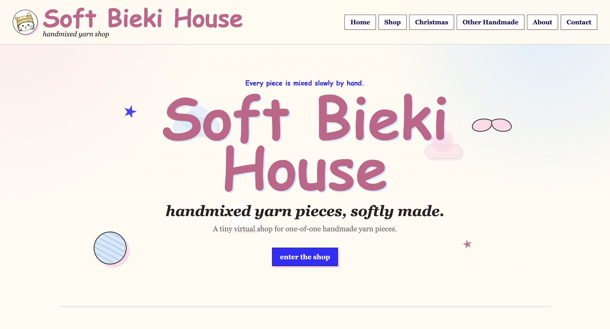
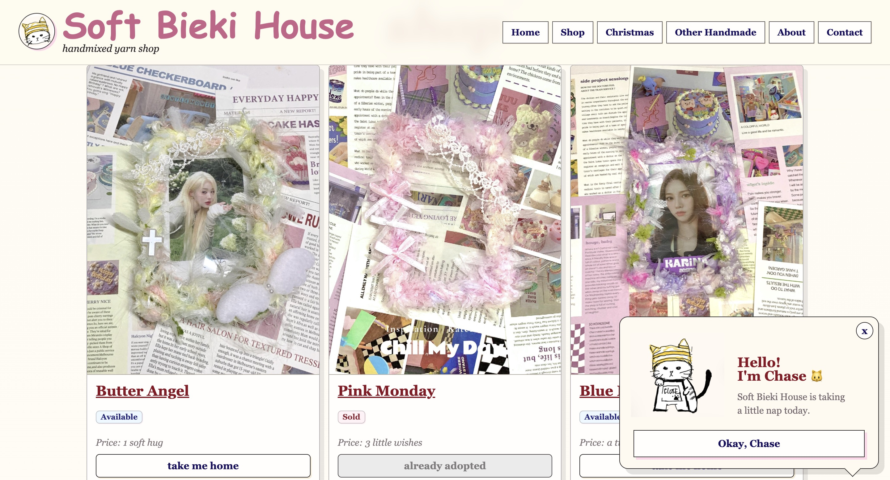
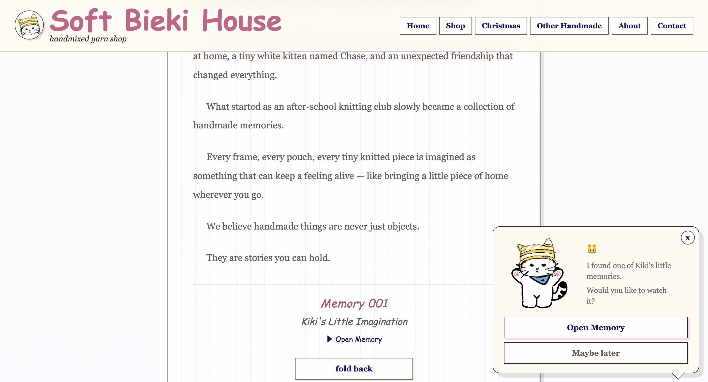

Social media support
content publishing, platform coordination, and day-to-day execution support
HONG KONG-BASED CONTENT PORTFOLIO
Social Media, Content & Brand Storytelling
I create content across social media, short-form video, and brand storytelling, with a growing interest in thoughtful digital experiences, visual communication, and lifestyle-oriented brand narratives.



Selected visuals from Soft Bieki House, a self-initiated handmade brand website project.
WHAT I DO
content publishing, platform coordination, and day-to-day execution support
short-form video, writing, visual direction, and communication through content
small brand websites, product storytelling, and lifestyle-focused online presentation
A quick selection of projects across brand storytelling, social media, and content creation.
A little about me
I’m especially interested in social media storytelling, digital content, short-form video, and brand communication that feels warm, clear, and human. My work so far ranges from a handmade brand website and Douyin operations support to self-initiated lifestyle content, writing, and reporting practice - all of which have shaped the way I think about content as both creative expression and practical communication.